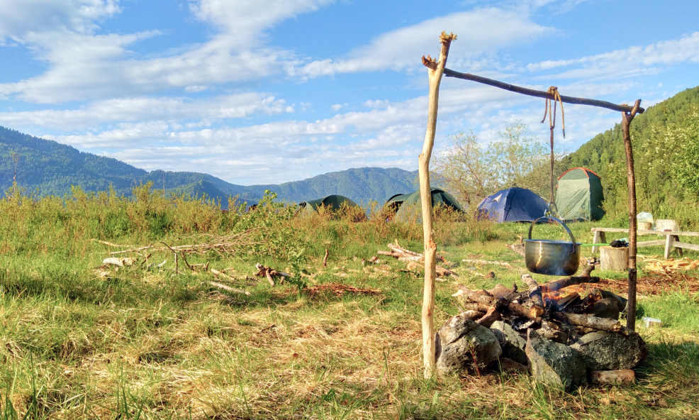

История Вятских лошадей

На территории России — больше двух миллионов озер. Чтобы посмотреть все, не хватит и жизни. Но некоторые из них нужно увидеть каждому.
Легендарный Байкал, озеро Лама в районе удивительного плато Путорана, знаменитое Ладожское озеро, розовое озеро в Калмыкии и бирюзовое озеро Кезенойам на Кавказе. Телецкое озеро, окруженные тайгой, на Алтае, а также озеро Двухюрточное на Камчатке — одно из лучших мет для наблюдения за медведями и другими дикими животными. Уверены, вам захочется побывать хотя бы в одном из этих мест.
Обрывы и крутые скалы с богатырями-кедрами на вершинах ‒ типичный рельеф береговой линии дивного озера. Здесь немало живописнейших каньонов и бухт. Рыбалка отменная: в озерных водах ‒ 14 видов рыб. Особо ценные: хариус , сиг, ленок, таймень. Купаться тут отваживаются только смельчаки: вода даже летом теплее 10⁰ не бывает.
В прителецкой тайге насчитывается свыше 1200 видов растений, в том числе прославленные целебной силой: золотой, маралий и Марьин корень. Здесь обитают более 70 видов млекопитающих. Можно встретить медведя, рысь, россомаху. Хозяевами чувствуют себя соболь, колонок, алтайский барсук.
Нередко его называют меньшим братом Байкала. Аналогий и вправду немало. После Байкала это второе по величине естественное хранилище питьевой воды. Ее в нем около 40 куб. км. За 6 лет вода в водоеме полностью обновляется. Его максимальная глубина достигает 325 м. Озеро питают 70 рек и речек, а вытекает, подобно Ангаре, единственная Бия.
Зимы в окрестных горах суровы, но у озера климат гораздо мягче. Его южная часть ‒ самый теплый район Центральной и Западной Сибири, полностью льдом озеро покрывается нечасто. Здесь существует необычный климатический феномен: разогретые жарким солнцем скалы, сжимаясь при низкой ночной температуре, выстреливают в окрестности камни.
Озеро расположено на северо-востоке республики Горный Алтай на территории сразу двух районов. Северная часть протянувшегося на 78 км в длину водоема расположена в Турочакском районе, южная - в Улуганском. Место малонаселенное. Городов поблизости нет.
Озеро расположено на северо-востоке республики Горный Алтай на территории сразу двух районов.
Другие новости
Эта история о прекрасном Человеке Юфереве Александре Аркадьевиче, благодаря которому мы (наше поколение) имеем возможность узнать и прикоснуться не просто к животному, а к Вятской лошади – как к части настоящей природы, не тронутой временем и цивилизацией, как к части Читать далее﹥
Эта история о прекрасном Человеке Юфереве Александре Аркадьевиче, благодаря которому мы (наше поколение) имеем возможность узнать и прикоснуться не просто к животному, а к Вятской лошади – как к части настоящей природы, не тронутой временем и цивилизацией, как к части Читать далее﹥
Эта история о прекрасном Человеке Юфереве Александре Аркадьевиче, благодаря которому мы (наше поколение) имеем возможность узнать и прикоснуться не просто к животному, а к Вятской лошади – как к части настоящей природы, не тронутой временем и цивилизацией, как к части Читать далее﹥